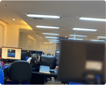
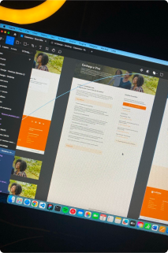

Olá, eu sou o Gabriel👋
Sou desenvolvedor front-end e UI Designer com 4 anos de experiência, colaborando em projetos para empresas como Minerva, VLI, Deloitte, e TIM. Meu foco é criar interfaces elegantes e funcionais que melhoram a interação e satisfação do usuário. Confira meu portfólio para ver como posso levar seu projeto ao próximo nível.


Atualmente, estou expandindo meus horizontes em busca de oportunidades como Desenvolvedor Web Front-End. O meu background em design de interface é uma grande vantagem, permitindo-me criar aplicações web que não são apenas visualmente atraentes, mas também robustas e acessíveis.
 Spotify
Spotify